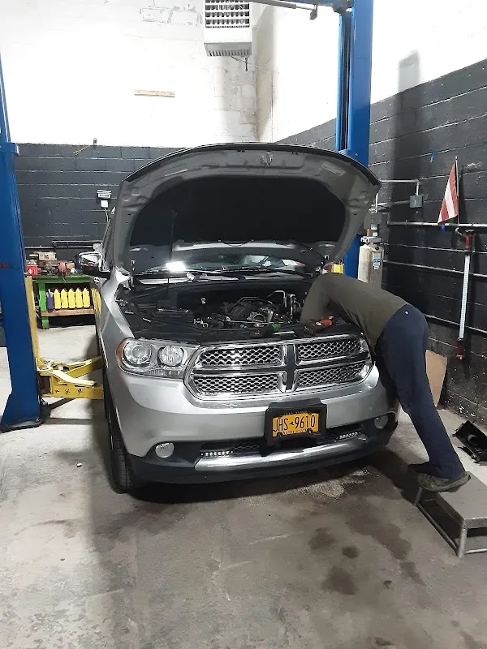
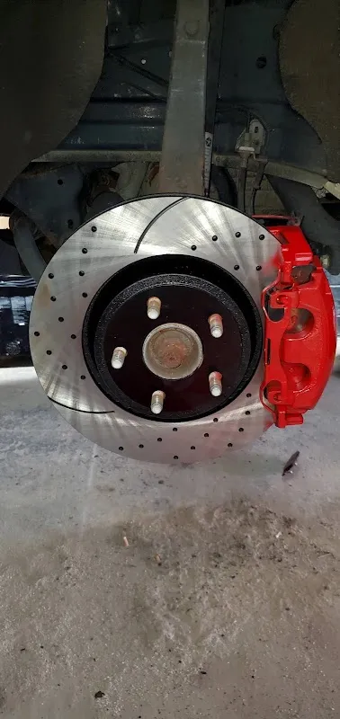

Tony’s Auto Repair
Auto repair shop in Brooklyn.
1090 Dekalb Ave, Brooklyn, NY 11221
1090 Dekalb Avenue
Tony’s Auto Repair is listed at 1090 Dekalb Avenue in Brooklyn. Describe the vehicle and the concern before asking about assessment, timing and the proposed estimate.
Tony's Auto Repair is listed at 1090 Dekalb Ave, Brooklyn, NY 11221. Explore the actual photographs and customer experiences before getting in touch.
Discuss your enquiry
1090 Dekalb Ave, Brooklyn, NY 11221
Get directionsCustomer words
“Easy breezy. Saw a potentional $200 problem and charged an honest $30. Like”
Roberto De Jesus
Read the reviewsPlan your visit
Prepare a clear enquiry for Tony's Auto Repair. Confirm the available service, price and timing directly.
1090 Dekalb Ave, Brooklyn, NY 11221